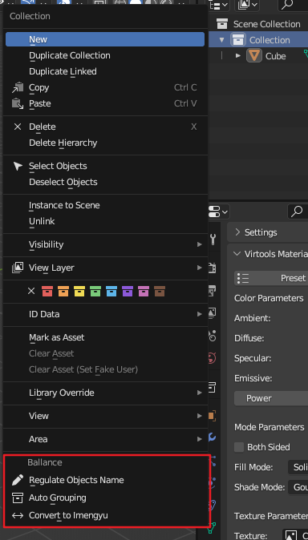

命名规则
自动归组与重命名
在大纲视图中，对任意集合右键，可以得到自动归组与重命名菜单。

本插件目前支持两种命名标准。
其一为技术信息章节阐述的制图链标准，在本插件中的名称为YYC Tools Chains。
其二为Imengyu/Ballance所用命名标准，在本插件中的名称为Imengyu Ballance。
这些功能最终只会展示成功与否的一个概括性消息。如果你需要详细查看某个物体为什么不能转换，请点击Window - Toggle System Console，插件在那里有更详细的输出。
Rename by Group
根据当前物体的归组信息，为其重命名为合适的名称。
这通常用在迁移原版地图的过程中。一些Ballance衍生程序没有Virtools组概念，因此需要依赖名称来取得归组信息。
Convert Name
在不同命名标准之间切换。
通常用于在不同Ballance衍生程序中进行转换。
Auto Grouping
根据给定的命名标准，为物体自动填充归组信息。
需要注意的是，原有的归组信息会被覆盖。
在制图过程中，如果你遵守了某些命名标准，则此功能可以为你自动完成归组功能。